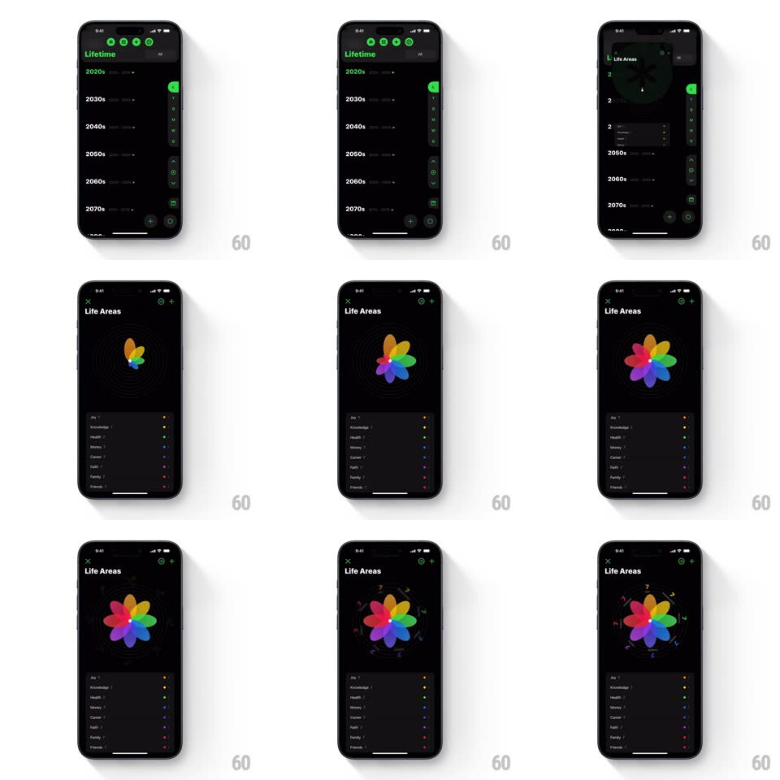

Media
Frame-by-frame

Rebuild this interaction 1:1: Y-Pod's Life Areas flower graph - from the Lifetime decades view, the screen transitions to a radar flower whose colored petals bloom outward from the center one by one, with the legend list settling below.

Rebuild this interaction 1:1: Y-Pod's Life Areas flower graph - from the Lifetime decades view, the screen transitions to a radar flower whose colored petals bloom outward from the center one by one, with the legend list settling below. ## Integration Integration: stack-agnostic spec - springs given as stiffness/damping, timed motions as duration + curve; map every value to your framework and animation library of choice. ## Scene Two dark screens: "Lifetime" - a decades list (2020s through 2070s) with green progress ticks and a side control rail; and "Life Areas" - a radial flower chart center-screen (petals for Joy, Knowledge, Health, Money, Career, Faith, Family, Friends, each a distinct color, sized by score), a concentric-ring scale behind it, and the legend list below with colored dots and values. ## Motion spec Pattern: blooming radial chart. - Transition in: the flower starts as a tight bud at center (all petals at ~5% radius, rotated together); the concentric guide rings fade in first (300ms). - Each petal then blooms: it scales/rotates outward from center to its score radius (spring ~300/16, visible overshoot, 500ms), petals staggered ~70ms apart sweeping around the circle. - Score numerals (7, 8, 9, 10) pop in at petal tips as each lands (scale 0.5 -> 1, spring ~500/20). - The legend list slides up below (translateY 20pt -> 0, fade, staggered 40ms per row) after the last petal settles. - Updating a score re-blooms just that petal (spring to the new radius) while others hold. ## Calibration - Petal length maps to score on the ring scale - the bloom must land exactly on its ring. - The stagger sweeps clockwise so the bloom reads as one gesture. ## Reduced motion Flower fades in fully bloomed; legend fades with it. ## Don't miss - Petals are rounded teardrops, slightly overlapped at the center like a real flower. - The guide rings are faint dashed circles with the scale numerals on one axis.